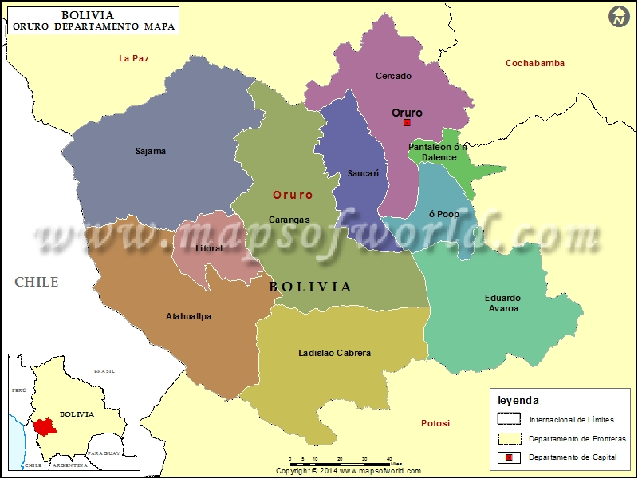

ARTICLE

Oruro es una ciudad y municipio boliviano, capital del departamento de Oruro y de la Provincia de Cercado. El municipio tiene una población de 264.683 habitantes, convirtiéndose de esa manera en la quinta ciudad más poblada de Bolivia.